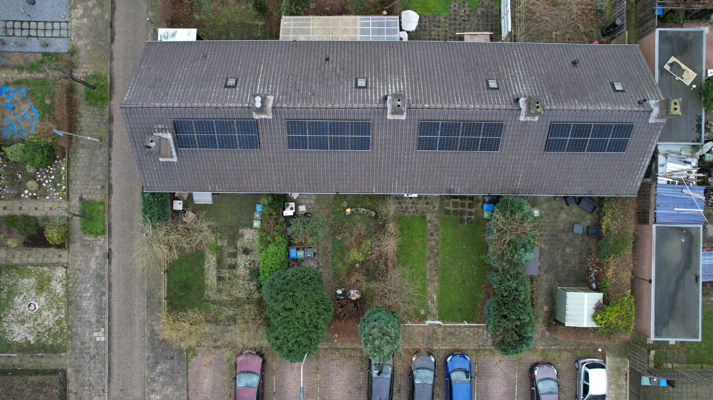

Steeds meer VvE's en wooncomplexen lopen vast op laadplekken, netcapaciteit en stijgende energiekosten. Vibe Energy helpt bewoners samen laden, besparen en verduurzamen — zonder netverzwaring en zonder gedoe voor het bestuur.
Laden, warmtepompen en inductie verschuiven het verbruik naar stroom — bovenop de bestaande aansluiting. En het net zit op steeds meer plekken vol, met wachtlijsten van maanden tot jaren.
Laden wordt een basisvoorziening in plaats van een extraatje. Eén of twee palen volstaan al snel niet meer voor het hele complex.
Vraag blijft stijgenWarmtepompen, inductie en elektrisch vervoer verschuiven het verbruik van gas naar stroom — bovenop de aansluiting.
Elektrificatie van wonenHet net zit op steeds meer plekken vol. Extra capaciteit aanvragen betekent vaak een wachtlijst van maanden tot jaren.
Net zit volDe vraag blijft de komende jaren stijgen. Een aansluiting die vandaag net volstaat, is morgen alweer te krap.
Vooruitkijken loontInvesteringen vragen draagvlak van bewoners. Onzekerheid over kosten en techniek houdt goede plannen tegen.
Draagvlak nodigGemeenschappelijke stroom (lift, hal, pompen) en bewonerslasten lopen op bij hogere tarieven en pieken.
Druk op de bijdrageBewoners met een EV kunnen niet laden — de aansluiting laat geen extra palen toe.
Gemeenschappelijke energiekosten en bewonerslasten lopen op zonder eigen opwek en sturing.
Warmtepompen en verdere verduurzaming stuiten op het kVA-plafond van de aansluiting.
Eén gestuurd systeem voor het hele complex — opwek, opslag en laden gedeeld.
Meer →Meer laadpunten op de bestaande aansluiting — gestuurd, zonder netverzwaring.
Meer →Eén businesscase met techniek, prestatie en de relevante stimuleringskaders.
Meer →Verdeelt vermogen over laden, warmtepompen en gemeenschappelijke last — eerlijk en automatisch.
Meer →Meer laadpunten op de bestaande aansluiting, eerlijk verdeeld via het EMS — zonder netverzwaring.
Collectief ladenEigen opwek en sturing verlagen de gemeenschappelijke energielasten en de bijdrage van bewoners.
Lagere VvE-lastenWarmtepompen en verdere elektrificatie passen binnen het systeem — toekomstbestendig.
Zonder verzwaringWe ontwerpen voor het hele complex, niet per appartement: gedeelde opwek, opslag en laden, eerlijk verdeeld via het EMS.
Eén systeem · alle bewonersHeldere businesscase met techniek, kosten en subsidies — bruikbaar in de ALV om draagvlak te krijgen.
ALV-ready onderbouwingVia exploitatie draagt Vibe de investering en het beheer. De VvE plukt de vruchten zonder grote eigen uitgave.
€ 0 capex mogelijkEen quickscan op uw complex geeft het snelst een concreet antwoord voor de ALV.
Stel uw vraagWij analyseren uw complex en laten zien wat een gezamenlijke aanpak oplevert voor laadplekken, energiekosten en verduurzaming — met een onderbouwing die u in de ALV kunt voorleggen.